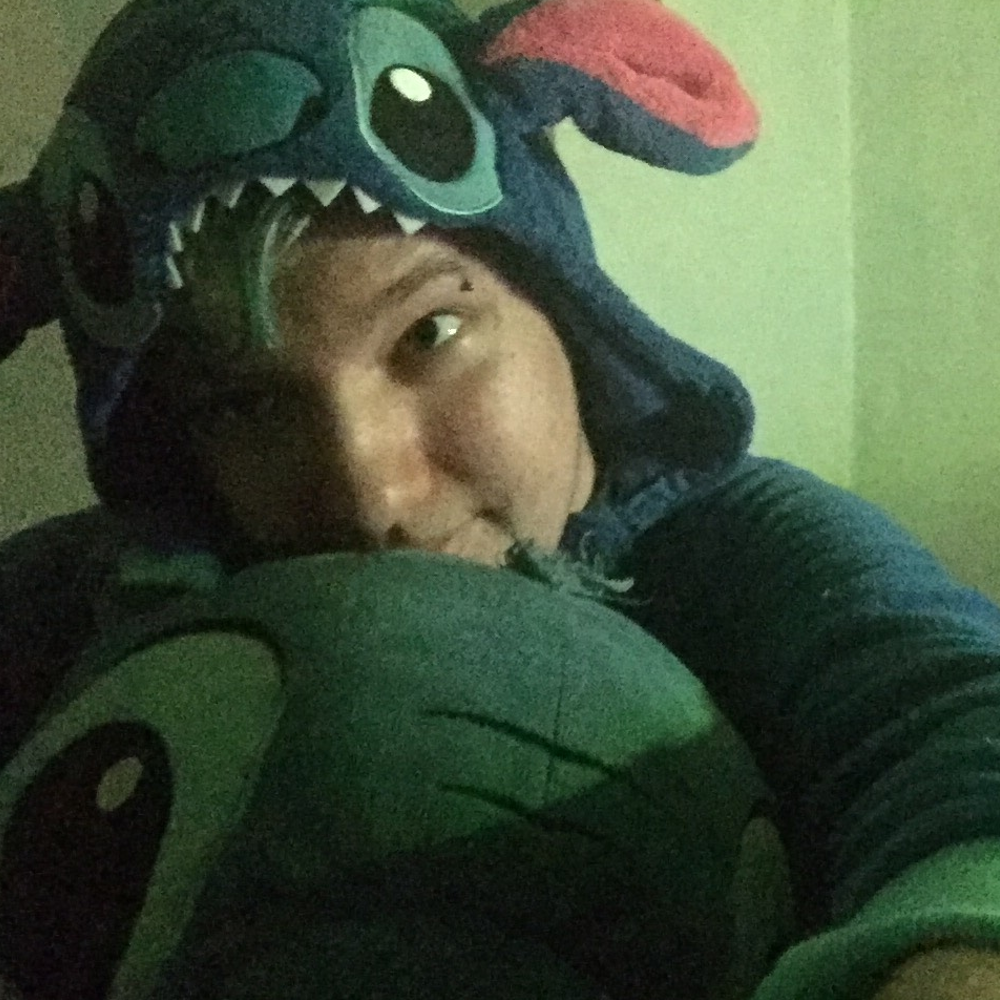
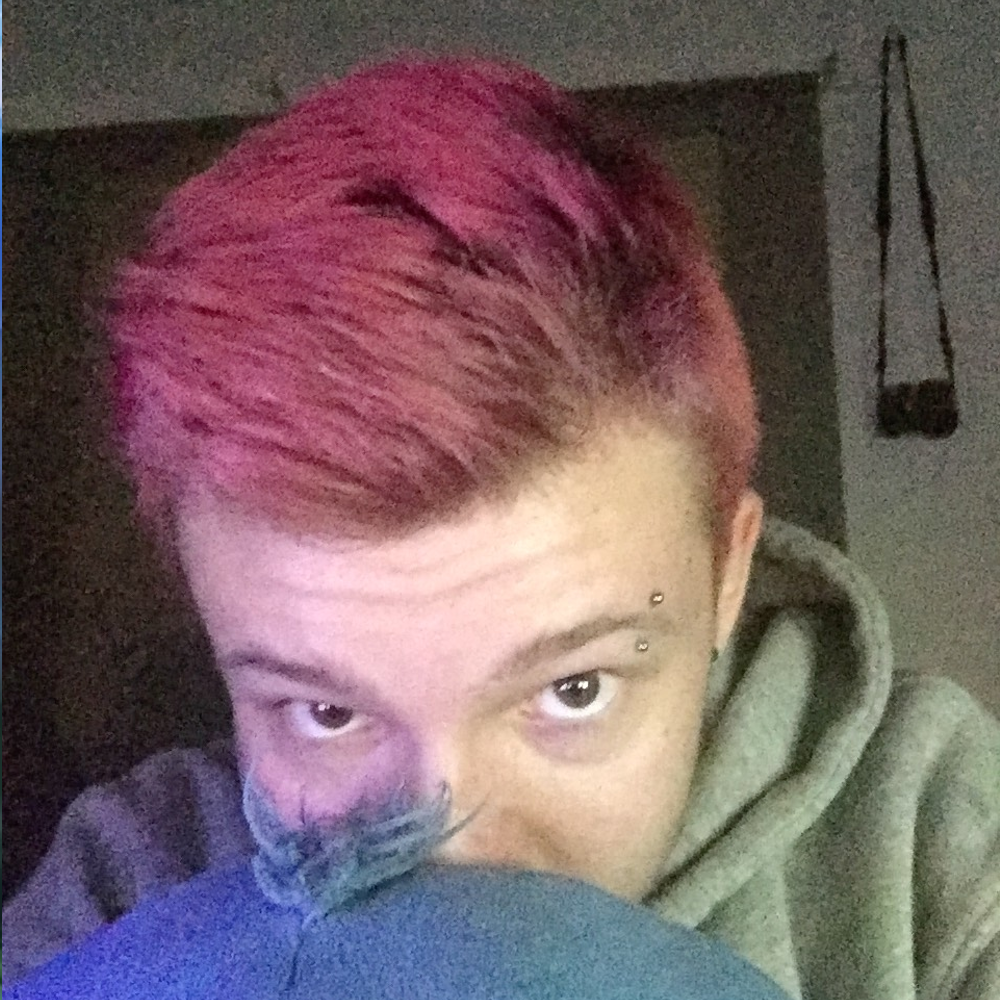
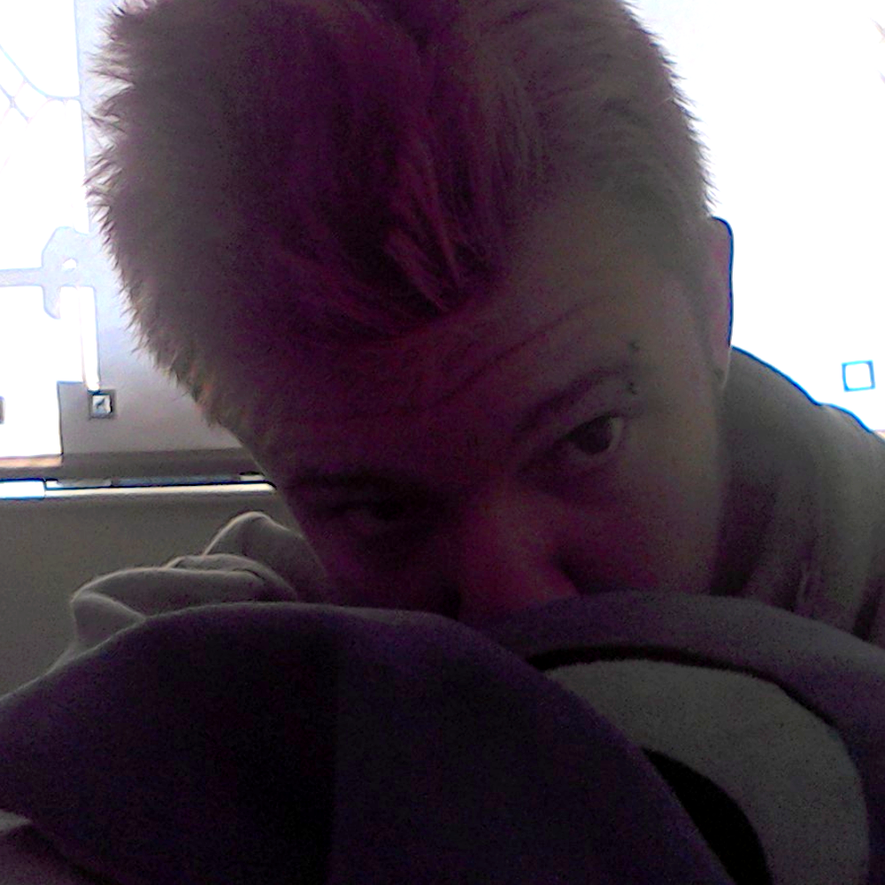

Eliza
Info
Name: Eliza (Ethan) Buckton
Age: 15
Gender: Transgender (Male - Female)
Race: Human
Appearance: See 'photos'
Personality: See 'personality'
Alignment: The fallen angel, Lucifer
Physically: Chubby, tall, crazy hair colours.
Abilities: Programming in multiple languages, and an inability to learn useful stuff with operating systems.
Sexuality: Homosexual
Eliza Buckton - a few minutes ago
Story
Lived with a lot of mental 'disorders'. Bullied during school.
Personality
Speratic tendencies, hyperactive and over-excited most of the time.
Photos
1 album created by user:
'Profile pictures' by Eliza

Created by ZoeyGlobe